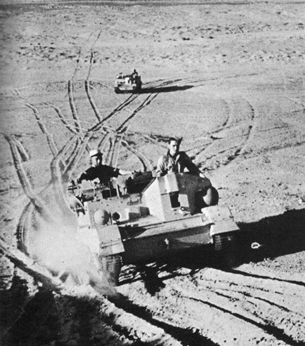À la fin du mois de mai 42 Rommel entend détruire Bir Hakeim et reprendre Tobrouk pour s’assurer la route de l’est, et le 26 mai 1942, il lance l’opération Thésée.
Le 26 mai, une jock column, appelée Tomcol, signale des mouvements ennemis d’une exceptionnelle ampleur et en avertit le quartier général de Bir Hakeim. On comprend que l'affrontement avec les forces de l'Axe est très proche. L'ennemi a réussi à couper les liaisons téléphoniques avec la 7ème armed division anglaise, avec les échelons B et avec la 3ème Indian Brigade.
Le lendemain 27 mai, à 6 h00 du matin, les chars ennemis arrivent au Sud de Bir Hakeim, tandis que la 21è Panzer qui contourne par le Sud se heurte à la 3è brigade motorisée indienne qui nomadisait dans ce secteur et qui se fait anéantir par 44 chars allemands au moment du breakfast, sans pouvoir se défendre. De Bir Hakeim, on entend le bruit de cette bataille. Précision : les survivants Indiens seront abandonnés dans le désert par les Allemands et souffriront de la soif totale 3 jours durant avant d’être recueillis par BH. Du moins ceux qui ont survécu au désert.
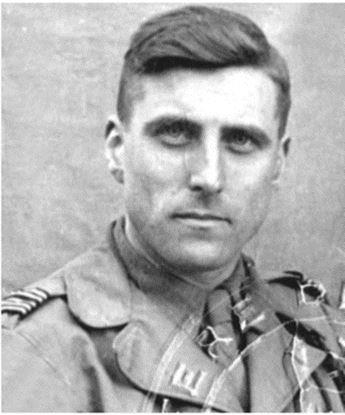 Le général Saint HillierÀ 1200m de la position, les chars italiens ouvrent le feu. La riposte est, selon le général Saint Hillier, violente, brutale, immédiate et précise.
L’artillerie française libre arrose, et les Italiens, surpris par la violence de la riposte, se débandent dès qu’ils sortent des camions ou des chars en feu. En une demi-heure, 32 chars italiens sont détruits, dont 6 qui avaient tout de même réussi à entrer à l’intérieur de la position. Les Français Libres font 76 prisonniers dont le colonel commandant italien. On se trouve avec 190 prisonnier au centre de la position, et tous s'accordent à dire qu'ils sont bien traités, d'autant qu'ils reçoivent autant d'eau que les Français.
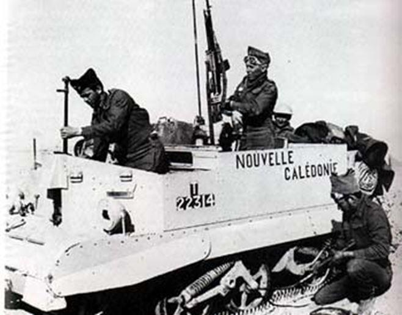Le général Koenig exprime même aux officiers ennemis son regret de ne pouvoir leur assurer davantage de confort !
La brigade, qui veut poursuivre son avantage, envoie dans le cours de la journée des patrouilles de Brenn-carriers tout autour de la position afin de la protéger.
Je ne vais pas vous raconter la guerre pas à pas, ce n'est pas ici notre propos, et je me suis concentrée sur certains épisodes significatifs. Mais cette guerre nous apporte des surprises. Par exemple lorsque l'ennemi arrive en vue de l’échelon B de Bir Hakeim et que l’ordre est donné aux 1777 hommes de cette brigade de se replier sur Bir El Gobi. Marchant dans cette direction, les centaines de véhicules de cette colonne croisent, sans les voir et sans enregistrer de pertes, les milliers de véhicules ennemis. Deux armées qui se croisent et ne se voient pas, ce n'est quand même pas très courant. Ou encore ces ennemis quia croient que Bir Hakeim a été emportée et se présentent à ses portes … pour être faits prisonniers avec stupeur lorsqu'ils constatent que les effectifs français se montent à une seule brigade.
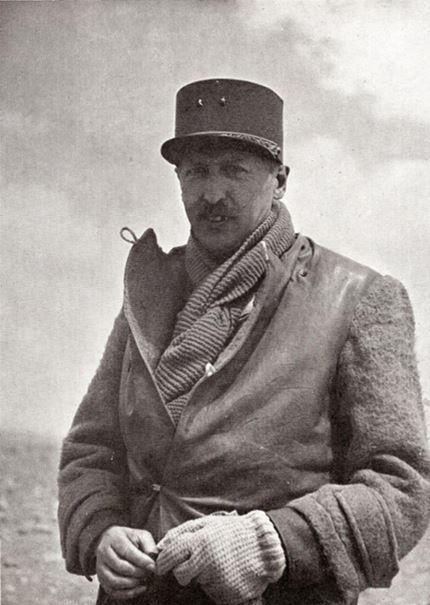Le 28 mai, le général Koenig assigne à ses FRANÇAIS LIBRES la mission de tenir la positon coute que coute. Non seulement les FFL respectent leur mission, mais ils vont le faire avec un moral à tout cran, et au soir du 29 mai, Albert Pivette, de la 1ère Cie du Bataillon d’infanterie de Marine, peut noter dans ses carnets « nous avons brisé l’encerclement». La 1ère phase du combat est terminée.
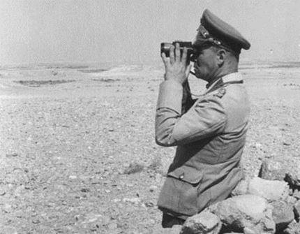À partir du 31 mai, l'offensive ennemie est reprise car Rommel a reçu l’ordre d’Hitler d’écraser à tout prix Bir Hakeim: « tous les gaullistes sont là, les anéantir, c’est réduire d’un seul coup l’esprit de résistance des Français ». Mais en fin stratège, Rommel s'en prend d'abord à l’héroïque 150è brigade anglaise du général Haydon, qui repousse six assauts successifs avant d'être anéantie. Rommel fait 3000 prisonniers et capture 123 canons qui avaient tiré jusqu’au dernier obus, puis il envoie sur BH des vagues de Stukas bombarder la position, tandis que les jeunes conducteurs de la 101è compagnie du train acheminent un gros ravitaillement à travers le désert et les patrouilles ennemies.
Par prudence, puisqu'on ne sait pas si un nouveau convoi pourra passer, Koenig abaisse la ration quotidienne d’eau à 2 litres par homme, ce qui est très insuffisant sous cette chaleur.
2ÈME PHASE
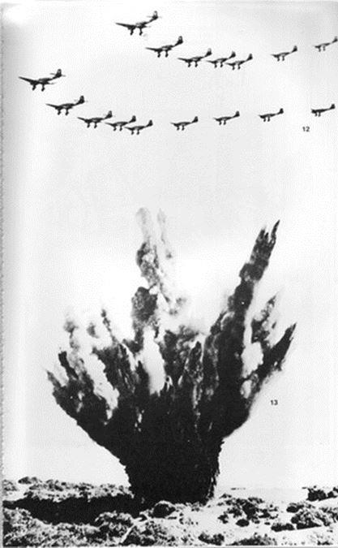Du 1er au 10 juin, la position est attaquée méthodiquement et complètement encerclée par les forces de l'Axe mais malgré les bombardements d’artillerie et d'aviation les plus violents, la 1ère Brigade repousse toutes les attaques, ne cède pas un pouce de terrain, et inflige à l’ennemi des pertes très élevées, ce qui renforce son moral.
Et pendant ce temps-là, le 1er juin, à Vichy, à la radio, Pierre Laval s’écrie honteusement et traîtreusement : « je souhaite la victoire de l’Allemagne ». Comment peut-on souhaiter la victoire de l’ennemi qui vous occupe et martyrise votre population ?
Mais les soldats de la liberté continuent leur résistance farouche. Malgré l'aviation allemande qui se déchaîne, larguant des engins de 500 kg qui font dans le sol des trous de 5 à 6m de diamètre.
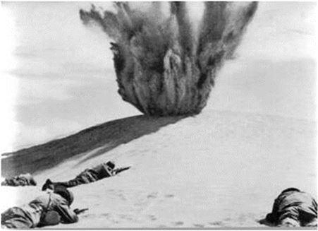Les fusiliers marins, par un tir nourri et bien ajusté, interdisent aux avions ennemis de descendre assez bas pour viser avec précision, refusant de quitter leurs positions jusqu’à la mort. D'autant que la VIIIème Armée demande par télégraphe à Koenig de tenir par tous les moyens.
2 JUIN
Or Rommel, qui pense que ces bombardements massifs ont déclenché la terreur et qui ne connait pas l’excellent moral et la bravoure de ceux de Bir Hakeim, envoie à la position le 2 juin 2 officiers italiens avec un drapeau blanc. Ils arrivent a pied, les yeux bandés, et ils ne parlent qu’Italien, mais se font comprendre…
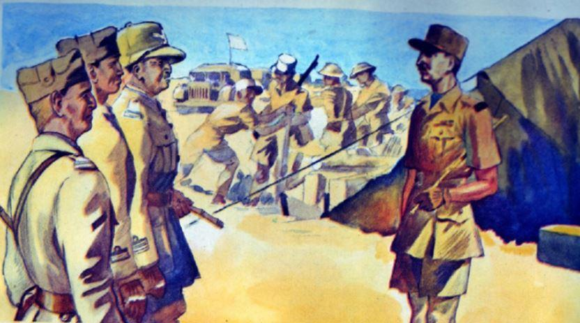
Emissaires italiens reçus par Koenig
Au nom de Rommel, « le grand vainqueur de la Libye », ils demandent au général Koenig la reddition sans condition sous menace d’extermination. Koenig les éconduit poliment mais fermement. Devant le refus de Koenig, Rommel, qui veut en finir avec ce qu'il appelle une « épine plantée dans ses flancs », répond par un nouveau bombardement intensif.
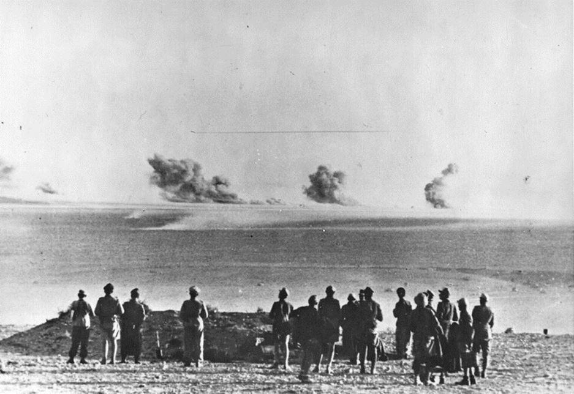
Etat-Major de Rommel devant Bir Hakeim
La chaleur est insupportable, le vent de sable réduit la visibilité à 3 mètres, mais les hommes, résolus et calmes, ont toute confiance en leur chef, et dans les jours qui suivent, Bir Hakeim encaisse 40.000 obus de gros calibre, le chargement de 1400 bombardiers et l’attaque des meilleures unités d’assaut de l’infanterie allemande. Les nuits, le ciel appartient à la RAF britannique, qui intervient pour disperser les Stukas.
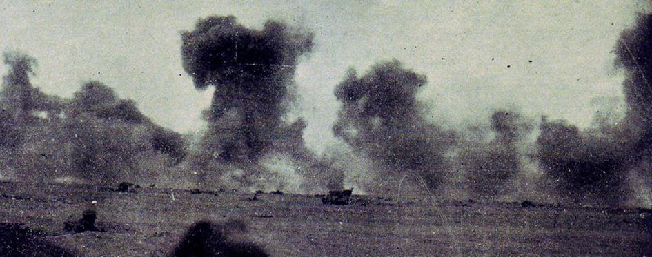Pour les Anglais qui veulent empêcher Rommel de pénétrer sur leurs arrières et de couper leur ravitaillement, la résistance de Bir Hakeim est essentielle, et Churchill le fait savoir.
Cependant, après avoir copieusement mitraillé la position, Rommel envoie encore 2 parlementaires sur le front. C'est la 2ème fois. Ce sont deux soldats britanniques faits prisonniers la veille. Ils remettent un message menaçant de Rommel : « toute résistance prolongée signifie une effusion de sang inutile. Vous souffrirez le sort des 2 brigades anglaises de Got El Waleb qui ont été détruites avant hier. Nous cessons le combat si vous hissez des drapeaux blancs et vous dirigez vers nous sans armes ». La réponse est donnée par les canons du Ier régiment d’artillerie, ce qui entraine une attaque de grande ampleur durant toute la journée. Mais la position commence à manquer d'eau, de vivres et de munitions.
Elle a cependant le soutien des Anglais qui, sous une chaleur écrasante, font la chasse dans le désert aux lents convois de Rommel. Le moral des Français Libres est excellent, malgré l’ampleur des attaques.
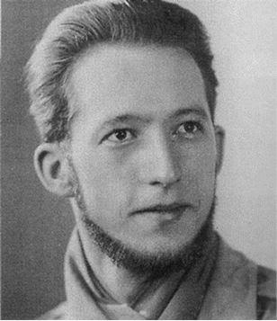Il faut tout de même comprendre ce que ces gens endurent. On peut l’appréhender par exemple à travers le témoignage du Dr Pierre Henri Mayolle qui écrit :
« Un jour en regardant vers le sud, vers la ligne d’horizon, beaucoup de poussière. [...] La danse commença, les blessés arrivaient de la 6è compagnie, de la 5è compagnie, lors des attaques allemandes qu’elles avaient repoussées. Mais pendant 15 jours notre vie fut aussi rythmée par les bombardements en piqué des Messerschmitt se répétant de plus en plus fréquemment.
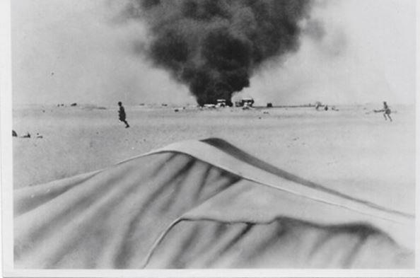D’avance en voyant se décrocher les bombes, nous savions à qui elles étaient destinées. C’est effrayant cette bombe qui vient de se détacher, on se fait tout petit. Le choc, la déflagration, on se tâte, on se lève, on est là. Le père Michel a été enterré mais on l’en sort vite, le drame est ailleurs.
Nos braves tirailleurs déjà blessés qui attendaient d’être évacués ont été aussi enterrés. L’un d’eux ne s’en sortira pas. Plus loin, à quelques pas de là, notre belle ambulance toute neuve n’est plus qu’une dentelle sans valeur. [...] Nez en l’air, cigarette aux lèvres, notre médecin chef Guénon remontait le moral de tous de façon extraordinaire. Il pansait des blessés dans ce qui restait de notre poste de secours quand un blessé grave fut amené et déposé dans le trou individuel de l’aumônier, l’amputation d’un membre inférieur s’avérant nécessaire. C’est aidé de l’adjudant-chef Monnero que je pratiquai avec plus, ou moins de bonheur cette amputation. »
Au petit matin, du 5 juin, une voiture tous phares allumés se présente à Bir Hakeim, et un officiel allemand demande à parler au commandant de la place. C’est la 3ème fois que Rommel envoie un émissaire à Koenig, et la 3 ème fois que celui-ci signifie son refus de capituler. Cette fois-ci, Koenig refuse de le recevoir et lui accorde 5 mn pour déguerpir. L’envoyé n’est donc pas reçu mais lit à la lueur des phares une déclaration en allemand par laquelle il somme la garnison de se rendre sous peine d’extermination, puis il repart sous les rires et les quolibets des légionnaires dont l’hilarité est décuplée lorsque sa voiture saute sur une mine, l’Allemand devant repartir à pied.
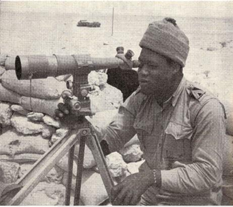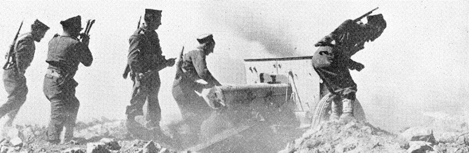
Le Bataillon d’Infanterie de Marine
Koenig sait que la position va subir une attaque de grande ampleur, mais répond à l’échelon B du général Larminat qui demande des nouvelles :
« tout va bien excellent esprit malgré nombreux bombardements … Le moral est bon, on les aura ». Ce que confirme dans ses carnets Albert Pivette lorsqu’il écrit : « L’aviation ennemie a été nulle. »
Malheureusement, la VIIIème armée britannique subit un terrible échec à Nightsbridge contre les forces de l'Axe. C'est ce que l'on appelé « la bataille du Chaudron », car elle se passe dans une sorte de cuvette étouffante, le Chaudron. La VIIIème armée britannique a perdu 6000 morts ou blessés, ce qui permet à l’ennemi de s’approcher de Bir Hakeim de tous les côtés avec son artillerie. L’attaque est arrêtée par une forte réplique française et Rommel s’énerve. A la BBC, le général Anglais fait l’éloge des défenseurs de Bir Hakeim, ce qui renforce encore leur moral. C’est un affrontement direct entre les soldats de de Gaulle et ceux d’Hitler et de Mussolini. Le monde en observe le déroulement, étonné de l’incroyable résistance des FORCES FRANÇAISES LIBRES. Avec des drapeaux blancs, les ambulances ennemies viennent ramasser leurs morts et blessé, et la nuit, c’est la bataille des mines qui commence, à la grenade et au poignard entre les assaillants et les patrouilles des FRANÇAIS LIBRES. Dans la position, on procède aux réparations, à la distribution des vivres, de l’eau, de munitions, aux soins aux blessés.
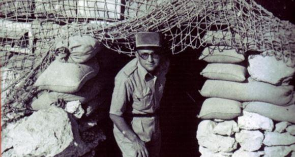Mais l’étau se resserre, même si, malgré la fatigue de 12 jours de combats, chacun garde sa volonté de résistance. Marcel Pontic, de l’ambulance chirurgicale légère, raconte:
« je me souviens d’un après-midi vers 16 heures, dans le camion opératoire.[...] le médecin commandant Durbac opérait un légionnaire blessé au ventre. Une bombe explosa non loin du camion opératoire et ébranla celui-ci , un éclat traversa la salle d’opération. Fort heureusement sans toucher personne [...] et avec un sang-froid que je n’arrive pas à analyser maintenant, malgré les détonations des bombes qui n’arrêtaient pas, toute l’équipe continue l’opération avec calme. La position sait qu'elle peut compter sur l'aide britannique : à chaque raid aérien allemand, la RAF intervient, prend en chasse et détruit de nombreux bombardiers, et Rommel s’impatiente toujours. »
L’historien allemand Paul Carell raconte :
« Kesselring arriva par avion et fit des reproches : « ça ne va pas comme ça, Rommel, attaquez-moi ce sale trou avec toutes les troupes terrestres disponibles ». Mais ce qui avait réussi dans le combat contre la 150ème brigade des Anglais ne réussit pas ici. {...] Ce qui aurait dû être un coup de main devenait maintenant une bataille sauvage ».
Mais les combats deviennent de plus en plus difficiles à tenir à partir du 8 juin du fait que les rations en eau, vivres et munitions commencent sérieusement à faiblir, et que l'ennemi poursuit son encerclement et se rapproche sérieusement. Les Allemands aussi en ont assez et devant les difficultés à s’emparer de la position, ils tentent le 8 juin un coup de bluff : sur un poste allemand, utilisant l’indicatif de la 1ère brigade, et dans un mauvais anglais, ils envoient le message, comme s’ils étaient anglais : « nous sommes attaqués, dites à votre chef de se rendre pour éviter d’autres effusions de sang ». Mais cela ne prend pas.
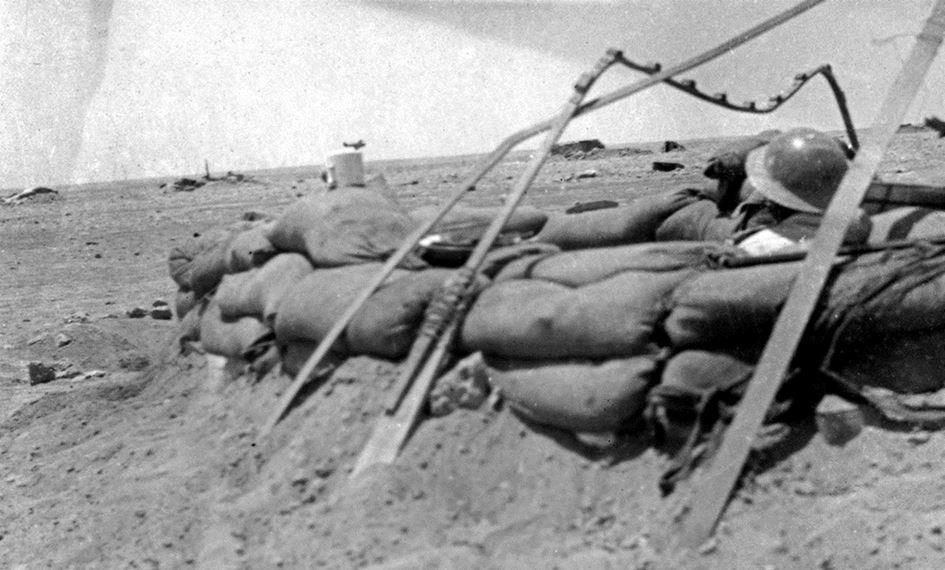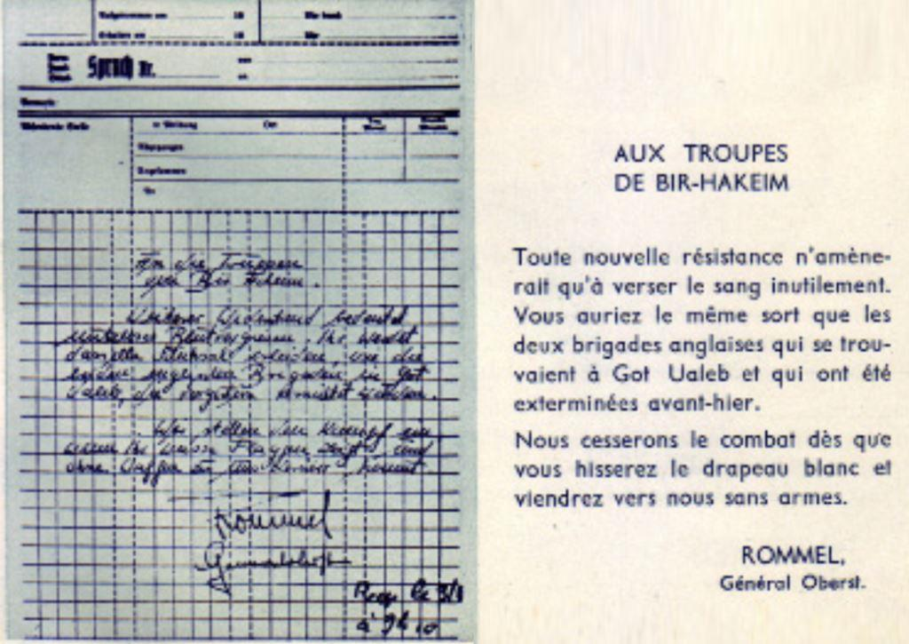
Ultimatum de Rommel (et sa traduction)
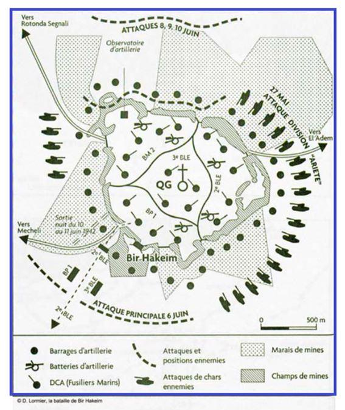La résistance se révèle plus dure que ne le prévoyaient les Allemands : Bir Hakeim augmente son feu d’artillerie, et dans cet enfer de feu et d’acier, les hommes s’entraident, entre différentes compagnies.
Le Français Libre Bouvier, engagé volontaire à l’âge de 16 ans après avoir accompli tout un périple à travers l’Europe, témoignera ainsi dans « le Courrier Australien » du 3 septembre 1943, sur ses blessures dues à une explosion :
« Les Anglais me ramassèrent, j’étais en assez mauvais état. Si mon bras droit fonctionnait à peu près, le gauche était grièvement atteint. Trois soldats écossais se proposèrent pour une transfusion de sang, et c’est ainsi que j’ai 60% de sang écossais dans les veines ... et j’en suis très fier ».
Seulement, au soir du 8 juin, le sol de Bir Hakeim est parsemé de trous de toutes dimensions, résultat des bombardements, la terre jonchée de ferraille, et les Allemands sont partout en bordure des champs de mines. Pendant la nuit, l’ennemi se rapproche et s’enterre. C'est alors qu'en pleine bataille, se produit un événement d’une importance capitale : la 7ème Armed Division fait connaître que la position de BIR HAKEIM n’était plus essentielle, et évoque l’évacuation. Koenig peut alors organiser la sortie.
Il donne rendez-vous aux Anglais à la Balise 837, dans le désert, avec des camions et des ambulances en nombre.
On décide que tout ce qui ne peut être emporté sera détruit, les effets personnels, les papiers importants, les véhicules qu'on ne peut emmener et qui sont incendiés par bombes. L’essence est vidée sur le sable. Avec leur dernier quart d’eau, les officiers de Légion se rasent, car « il faut être correct pour mourir » dit le colonel Amilakvari. Le malheureux ne sait pas qu'il va laisser la vie dans cette affaire.
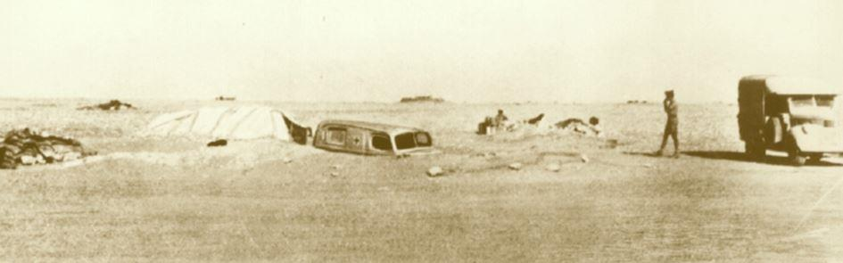
Le centre de secours est enterré
Seulement comment évacuer quand on est cernés de tous côtés ?
LA SORTIE DE VIVE FORCE
Le général Koenig décide que la 1ère Brigade sortira de vive force, dans la nuit, les armes à la main. « Il est exact, a-t-il déclaré plus tard, que nous aurions pu sortir sans coup férir, tous à pied et pour ainsi dire sur la pointe des pieds. C’est de cette manière que l’effet de surprise aurait été obtenu en mettant de notre côté le maximum de chances. Mais dans ce cas, nous aurions volontairement abandonné nos blessés [il y en avait 200], notre armement et ceux de nos véhicules intacts Agir ainsi eut été contraire à ma conception de l’honneur militaire et je ne pus m’y résoudre ... Nous étions des Français libres et ne pouvions nous permettre de partir à la sauvette. ... en conséquence, j’ai prescrit que la sortie s’exécuterait de vive force et les armes à la main ».
Mais une telle sortie est difficile : la nuit est particulièrement noire et les repères habituels ont disparu, le terrain est bouleversé par les trous d’obus, jonché de chars, d’automitrailleuses, de tracteurs incendiés, de canons renversés, de véhicules disloqués, de stocks éventrés. Tout cela, on ne le voit même pas. Et le bruit des colonnes de véhicules alertera l’ennemi qui commencera à tirer et à lancer des fusées éclairantes. .
Un faible détachement sera laissé pour tromper l’ennemi jusqu’à 8h du matin : pour chaque face du bastion, il y aura 1 gradé et 4 hommes, qui devront réagir par le feu en cas de patrouille ennemie, et tireront de temps en temps quelques coups de feu pour montrer qu'il y a du monde. Ils seront équipés d’une excellente voiture et d’un FM.
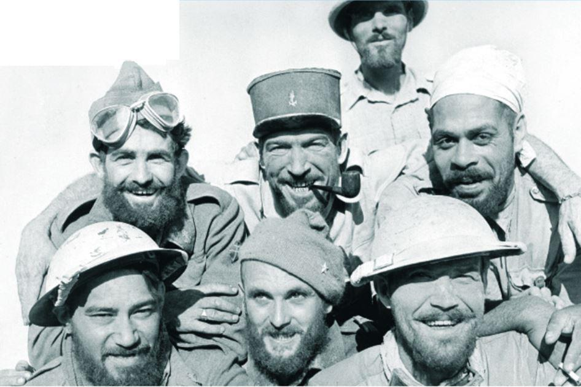Le soir tous les blessés sont embarqués dans les 4 sanitaires qui peuvent encore rouler et dans les camions reçus de la 101è compagnie du train. Le service de santé n’est pas armé et doit conduire le plus de blessés possible chez les Anglais. Le convoi de santé passera au milieu des combattants qui doivent protéger les blessés.
Les véhicules se déplacent en deux colonnes : ceux de combat et de commandement dirigés par le commandant Champrosay, avec les véhicules de transport des blessés graves, et la 2ème colonne du commandant Bourgeois comprenant les camions. Les véhicules se massent, les bataillons à pied se rassemblent pour prendre une position d’attaque.
Le général Koenig doit sortir le premier, à la tête de ses troupes. Les bataillons anglais les attendent à une quinzaine de kilomètres. Leur premier poste doit être marqué de trois feux rouges.
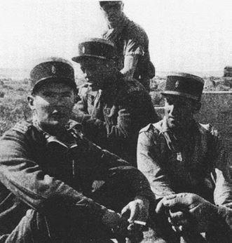 Le capitaine Simon, le capitaine Lalande, le lieutenant VASAQ et le capitaine Saint HillierVoici comment le général Simon (capitaine à l’époque), décrit la sortie : « lentement dans la nuit, la colonne se forme et se dirige vers la sorte. Je roule en tête avec le lieutenant Sartin. Seul un étroit passage a pu être déminé. [...] les véhicules attendent dans le chenal que la voie soit ouverte. Je remonte avec Sartin la colonne et nous arrivons à la hauteur de la voiture du général Koenig Miss Travers [la seule femme présente à Bir Hakeim] est assise sur le marche pied.
À 23h15 les colonnes s’engagent dans un passage déminé, et un poste allemand implanté dans notre propre champ de mines lance l’alerte par une fusée. Des lignes sautent sous le poids des véhicules, des camions flambent, des blessés appellent. Les conducteurs les plus décidés entraînent derrière eux quelques voitures. Les pneus, les pare brise, les radiateurs sont plus ou moins percés par les balles, qu’importe, tout ce qui peut rouler continue droit devant lui. Le tout se passe dans une confusion extraordinaire : le bruit des mitrailleuses, le fracas des explosions, les hurlements les plus divers. Les Allemands ne se rendent pas compte de ce qui se passe, mais le bruit des véhicules a alerté l’ennemi qui tire, et fait des morts. Les hommes réagissent, foncent en avant, la rage au ventre, décidés à passer. En tête, la voiture de Koenig charge et traverse les trois barrages de feu ennemi, suivie des Brenn Carriers, des ambulances qui emmènent les 200 blessés.
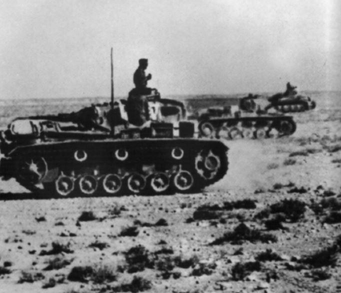 Chars allemands de l’Afrika KorpsLe tir ennemi devient violent, et Koenig ordonne une sortie rapide : « en bataille ». Les voitures sortent par groupes de 10 ou 15, entraînées par des chefs courageux. Des combats ont lieu, comme celui du lieutenant Dewey qui écrase avec ses Brenn Carriers trois résistances ennemies.
Les fantassins à la queue leu leu marchent à côté des véhicules, essayant de marcher le long du côté le moins mitraillé. La progression est lente. Le lieutenant Devez, commandant la compagnie de Bren-Carrier, et réserviste de la Légion étrangère, protège la colonne en fondant sur les nids de mitrailleuses, écrasant tout sur son passage, tirant à bout portant. 3 fois il repart à l’attaque. La 3è est la dernière. Mais il a sauvé beaucoup de vies. C’est grâce à de tels hommes que la plupart des hommes de Bir Hakeim purent accomplir leur sortie. ]. Son courage a permis l’ouverture d’une brèche et le passage du convoi d’ambulances. Les groupes à pied se portent vers les lieux de regroupement où les attendent les vaillants équipages du train et la 7ème brigade blindée britannique. De temps à autre un groupe à pied disparait, haché par un tir ennemi de mitrailleuses lourdes. Les pertes sont lourdes, les hommes se perdent.
Des officiers (Puchois, Bricogne) se sacrifient, attaquant eux-mêmes à la grenade ou au fusil les nids de mitrailleuses ennemies, ce qui permet le passage des véhicules. Le général Saint Hillier est le dernier à sortir, mais il n’y a plus de voiture, et Mantel fait demi-tour pour venir le chercher. Les voilà seuls dans le désert.
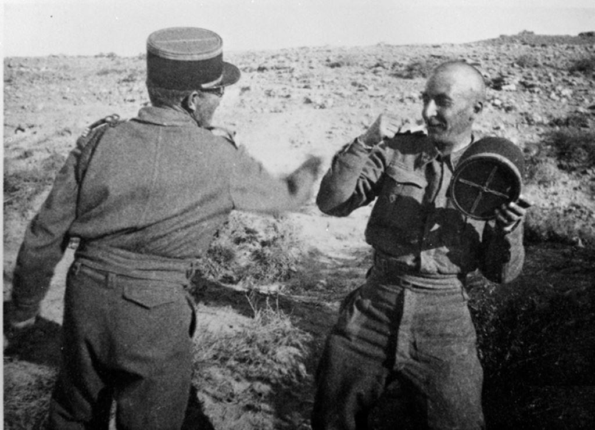
Le capitaine Pierre de Hautclocque, dit Rennepont, et le capitaine Charles Bricogne
Pour atteindre le lieu de rendez-vous où attend la 101ème compagnie auto, protégée par la 7è Brigade motorisée anglaise, il faut traverser 3 lignes ennemies, puis les positions de batteries. Des combats par petits groupes ont lieu dans la nuit. Dès 4 heures, les 1ers éléments de la Brigade rejoignent les Britanniques qui les attendaient. Les blessés sont pris en charge, et tous s’inquiètent pour le reste de la Brigade. Un camion atelier file dans le désert et secourt un camion immobilisé, avec 40 hommes. Ils le remorquent et ramènent encore 40 autres hommes.
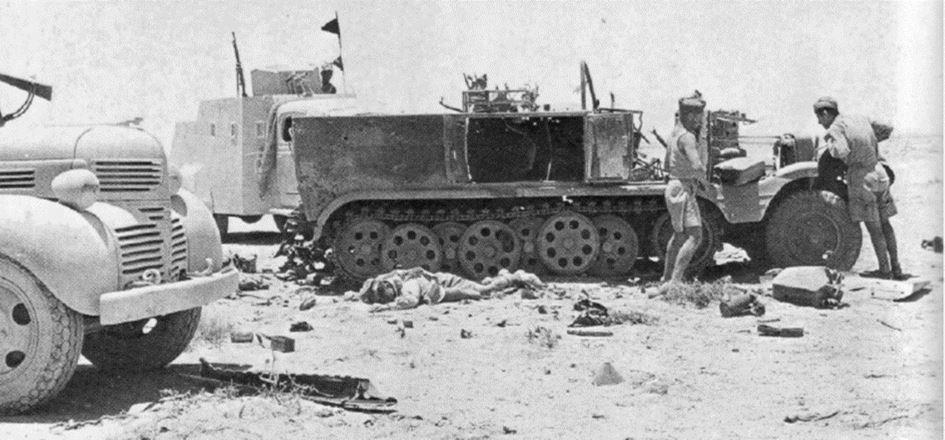Un témoin note : « Nous fonçons dans la nuit quand brusquement mon véhicule tombe dans une tranchée garnie d’Allemands. Nous bondissons à l’extérieur et courons tant que nous pouvons au milieu de groupes d’Allemands. Brusquement un homme tombe, il nous appelle, nous continuons à courir. Soudainement nous nous arrêtons tous les trois : ce n’est pas correct de laisser ainsi un camarade de combat. Nous revenons en arrière et récupérons le blessé. Il a une balle dans le genou. Il est vraiment très lourd. Nous le portons Gambier et moi tandis que Foucher assure la protection avec son fusil mitrailleur. Nous sommes épuisés. Le jour va venir. Nous apercevons devant nous un camion en panne. C’est un véhicule de l’ambulance chirurgicale qui transporte une trentaine de blessés accompagnés par le commandant Durbac. Le véhicule est remis en état de marche, nous montons sur le marchepied. Sauvés »
Témoignage du Dr Pierre Henri Mayolle : avant l’ordre de repli, il ne nous restait que 3 blessés au poste de secours. Ils partirent avec nous dans l’ambulance […] mais au milieu ds champs de mines, un schrapnel mit fin à la carrière de notre dernière ambulance. C’est clopin clopant que nos trois blessés, le père Michel et moi-même, partîmes à l’aventure [...] on continua la marche, assoiffés, il ne restait plus d’eau. Notre blessé du pied, un grand tirailleur de la 6è compagnie, continuait avec courage à nous suivre, aidé tantôt par l’un, tantôt par l’autre. Quel cran ! Nous n’avancions qu’avec prudence parmi les positions allemandes et italiennes quand, semblant déchirer un voile dans la brume, avec bruit, des véhicules lourds et des auto mitrailleuses firent route vers nous. Impossible de les éviter. C’était une patrouille britannique à la recherche des combattants repliés de Bir Hakeim. Nous avions réussi à ramener nos trois blessés.
On se retrouve souvent seul dans le désert à la recherche de la balise 837 marquée de trois feux rouges. Les premiers qui arrivent mettent quatre heures pour cela. Les véhicules chargés des blessés arrivent les premiers à ce point où les attendent des Sud-africains imperturbables, attendant leurs camarades avec des tasses de thé. A leur côté, formés en carré et prêts à tout, les camions du train français libre attendent l’infanterie.
À 7 h00, on signale de nombreux isolés, blessés, égarés, dans le désert. Le général Saint Hillier nous fait part des hommes perdus dans le désert :
« À 5h00, la majorité des défenseurs et une grande partie de notre matériel roulent vers la liberté ... et les futurs combats. Des isolés errent encore dans le cercle d’investissement, quelques-uns trouveront le moyen de passer. Une brume épaisse recouvre Bir Hakeim où restent quelques centaines d’hommes arrêtés par des tirs plus précis. À 7 h00, le commandant Masson signale au commandant britannique Julycol que de nombreux hommes se sont perdus dans le désert, et qu’on n’a aucune trace de Koenig. Des patrouilles de Brenn Carriers sont envoyées à sa recherche. Koenig arrive finalement à midi, et à 19h, 2500 hommes sont réunis. Dans les jours qui suivent, des véhicules égarés ramènent encore qq hommes ; d’autres sont récupérés par les colonnes britanniques, largement au sud et à l’est. La 101ème compagnie ramène, elle, 70 hommes, épuisés.
Au total, 2570 combattants ont forcé le barrage, et il ne reste dans Bir Hakeim qu’une centaine de soldats, blessés pour la plupart. »
Un survivant, Michel Gorlin, qui a perdu son unité, témoigne :
« je me retrouvais dans la nuit noire hors du champ de mines, sachant seulement qu’il s’agissait, avant l’aube, de rejoindre dans le désert « un point à 11 kilomètres, à 123°30’ ». Par chance je tombais sur un groupe de fusiliers marins qui possédaient dans cette nuit folle l’instrument du salut : une boussole.
C’est avec eux que, dans la brume épaisse du jour naissant, je découvris des choses vagues qui allaient se révéler être des Anglais prenant le thé en nous attendant. Après El Alamein, nous sommes revenus Bir Hakeim enterrer nos morts. Nous avons retrouvé les carcasses de nos canons, les chars ennemis, et dans le trou où avait été enterrée ma pièce, en remuant un peu le sable, j’ai retrouvé un livre que j’avais abandonné. C’était « Nez de cuir », de La Varende ».
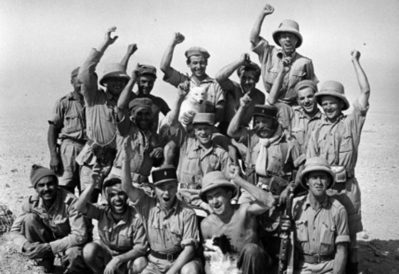
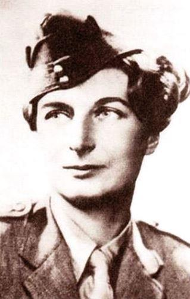Mais la sortie du général Koenig lui-même est extraordinaire, racontée par son chauffeur Mrs Travers :
« c’est une jeune fille anglaise engagée en juin 40,dans la France Libre. Elle devient conductrice du général Koenig avec le titre de Caporal de la Légion. Elle fut la seule femme présente à Bir Hakeim durant la bataille. J’éprouvais une certaine appréhension, la voiture était usée, et le moteur calait au ralenti, et j’avais alors de la difficulté à la remettre en marche. […] le général m’a dit de suivre les 3 Bren-Carriers qui nous précédaient en file indienne[...] mais ils ont sauté les uns après les autres. D’autres voitures derrière nous ont aussi sauté. [...] ordre a été donné aux voitures de retourner en arrière.
Je suivais la voiture du colonel Amilakvari. [...] Au bout les Allemands barraient le passage avec un tir de balles traceuses. J’ai foncé à travers le feu d’artifice ; de l’autre côté c’était l’obscurité complète. Le colonel était assis à côté de moi et il avait une mitrailleuse à la main. Le général lui a dit : « ne tirez pas, ils vont nous repérer ». et le colonel lui répondit : « mais ce n’est pas moi qui tire, ce sont eux ». [...] Quand cela sembla plus calme, le colonel Amiklavari me dit : « arrêtez-vous ici, je vais regarder la boussole ». Et il a ouvert la porte pour descendre quand nous avons entendu des voix qui parlaient près de nous en allemand. Le colonel a refermé vite la porte et m’a dit de filer tout droit. Je roulais très vite et je ne voyais absolument rien. La voiture tombait dans des trous. [ ] Le colonel avait sa boussole et me dirigeait. Je devais fixer une étoile et conduire dans sa direction. Plus tard le général a pris le volant jusqu’au lever du jour. Après j’ai conduit de nouveau tout le restant de la journée. Nous avons traversé un camp de voitures anglaises abandonnées, autrement le désert était vide. Tard dans l’après-midi, nous sommes arrivés au PC du colonel Garbay, nous étions les seuls arrivés, et on ne savait rien sur le sort de la brigade. [...] je me suis endormie. À mon réveil j’ai vu des sanitaires et des camions qui arrivaient et on me dit que c’était la brigade. [...] C’était une grande joie de les revoir mais ensuite il y avait de la tristesse d’apprendre que beaucoup n’avaient pas eu autant de chance ».
Les rescapés arrivent en cours de journée et se désaltèrent. On fait le compte des présents : sur les 5500 hommes répartis dans les échelons A et B, seuls répondent présents 4522 hommes valides et 190 blessés évacués soit 85,6%.
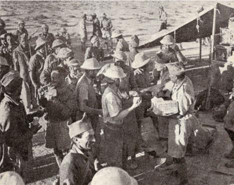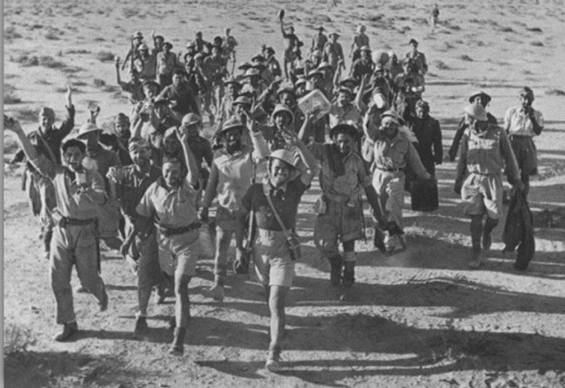
Les rescapés du désert
11 JUIN
C’est finalement une véritable charge qui a été donnée par les Forces Françaises Libres, par surprise. Les deux compagnies sur place évacuent à leur tour, et les Allemands ignorent que Bir Hakeim est maintenant vide et bombardent le lendemain matin.
Pourtant, à l’aube, Bir Hakeim n’est pas encore prise. L’ennemi n’a pas réalisé ce qui s’est passé pendant la nuit. Il a cru à la sortie d’une forte patrouille qui se serait empêtrée dans les marais de mines. Rommel a prévu pour cette journée la charge de la 15ème division blindée précédée d’un bombardement aérien massif.
Le bombardement a donc lieu mais pour rien, dans la position ne se trouvent que quelques isolés, la plupart blessés, qui épuisent leurs dernières munitions.
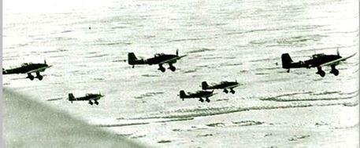612 hommes ont été capturés vivants par l’ennemi, 176 sont tués ou ont disparu soit 3,2 % de la Brigade. Malheureusement, sur les prisonniers, beaucoup vont mourir dans le naufrage du navire italien Nino Bixio qui les amène en Italie et est coulé par les Britanniques.
En fin de compte, ces hommes ont remarquablement résisté,
Peut-on pour autant parler de victoire pour les Français libres ? Non bien sûr. Ainsi que l’a écrit le général Saint Hiller, « une retraite n’est jamais une victoire, mais ajoute-t-il, dans l’histoire de la guerre d’Afrique, Bir Hakeim eut plus de portée que certaines victoires sans lendemain, et l’endurance des soldats de Koenig a eu plus d’importance pour la VIIIème armée britannique, pour l’Égypte et pour la suite des événements, que la conquête de Tobrouk par le général Rommel quelques jours après ». Par sa résistance, prolongée au-delà de tout espoir puisqu’au début on ne pensait qu’à tenir quatre ou cinq jours, la 1ère Brigade Française Libre a permis à la VIIIème armée britannique de se dégager et d’éviter un désastre, recueillant des éloges dans le monde entier.
Partager cette page